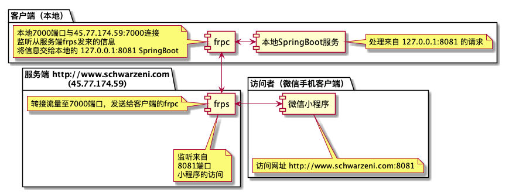

为了微信小程序开发调试方便，需要在手机上进行调试，ngrok和natapp免费的解决方案网速太慢而且老是断，正好有一个服务器，决定使用开源内网穿透程序frp自己搭建环境
开发环境
- 服务器：Centos7
- 本机： MacOS
- frp： 0.23.3
- 本地开发服务器地址：127.0.0.1:8081
- 分配给frp地址： 127.0.0.1:7000
大体架构

服务端配置
centos需要打开防火墙相应的端口，如上，需要打开 7000，8081端口
1 | firewall-cmd --add-port=7000/tcp --permanent |
测试是否成功打开
1 | firewall-cmd --query-port=7000/tcp |
配置文件
服务端
服务端配置 frps.ini 文件
1 | [common] |
服务端使用 frps 启动，使用nohup将其置于后台运行
1 | nohup ./frps -c ./frps.ini & |
可以使用命令查看其进程号
1 | ps -aux | grep frps |
本地配置
本机配置 frpc.ini文件
1 | [common] |
本地使用 frpc 启动，置于前台运行就可以
1 | ./frpc -c ./frpc.ini |